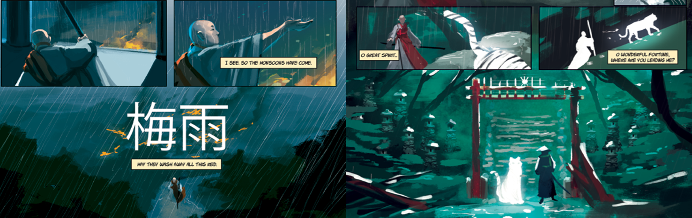
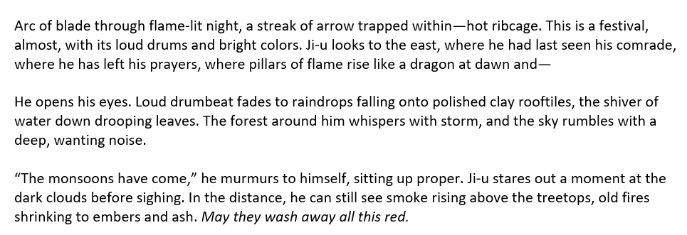

As a journalist, Jin keeps a small Wordpress blog
and publishes some of his research, observations and multimedia projects.
He has written for Northeastern University's new international student magazine,
the Global Observer. Jin has also written for The Scope
on a community-based organization "Everything is Free" in Boston.

The header of the Global Observer website.
In particular, Jin is curious of the relationships between Asian American identities,
cultural diaporas and their future influence in the world.
He believes that his multicultural and multilingual experiences,
studies in computer science, game design and journalism
allow him to observe from a perspective that may differ from
traditionally trained journalists.

A research game project designed to test the psychological concept of "conformity" and "obedience" within the cyberpunk environment and narrative.
As the player progresses through the levels, their decisions will impact gameplay in subsequent levels, as well as the player's personal ending.
Research paper "Integrate: A Digital Game for Testing Conformity in Game Making" published in Springer book
"Game User Experience and Player-Centered Design" in spring of 2020!
Jin is the corresponding author for this chapter.
For the curious, there is a Github repository of the game,
as well as a web version of Integrate available on itch.io.
Details about this specific project can be found on the research page.

Jin worked as the Lead Narrative Writer, Assistant Programmer, and the Technical Artist/Animator for this project.


Spritesheets of Jin's first-ever sprite animations.
The game was inspired by Korean folklore about "Imugi," also known as lesser dragons.
The narrative follows the Imugi character in its descending journey to find strength, wisdom, and empathy
before then catching a pearl from heaven.
The player takes on the role of one such Imugi and must find virtues to become a fully grown dragon.
The design goal was for players to feel like they were descending through the maze-like ocean as they searched for the virtues,
encountering enemies, obstacles, and bits of story along the way.
The further they descend, the more mysterious and chaotic the game becomes.
In an underwater world filled with strange items with histories and enemies to slay,
the Imugi's journey to collect the Three Virtues will not be easy...

A look deep in the abyss level. You seem to have found something?
Play the web version of DRAGON, or take a glimpse into the Github Repository.

Jin worked as the Project Lead for this student project.
A game inspired by a certain college student's desperate need for coffee on a late school night,
CRUNCHTIME is a board/card game with the premise of being... university students studying for a final exam!
Unleash your unfortunate college student powers as a Coffee Hound and hoard INT!!
Everyone seems to have been slacking on their studies and starts with zero INT, which you need to pass exams.
Players play through a total of seven turns with each turn representing one day.
They must perform the available action cards in their hand to either Study,
or manage their Stress levels so they won't get docked one Hit Point permanently.
Beware low energy days, for player action points are greatly reduced in comparison to high energy days.
But wait, Your physical and mental health is important too! Neglect these, and your performance during your final examinations will suffer.
You have the choice to study with a buddy, cram the last two days with unhealthy combinations of coffee and energy drinks,
go stress shopping and see derivatives everywhere...
Or perhaps even give up on your studies and prank your friends instead!
Image of the final board design.
(Sidenote: This game hit too close to home for most of its playtesters, as well as its creators.)
Jin worked together with a professional illustrator in the ambitious WANDERLUST project,
successfully Kickstarted at the end of 2017.
As the entire anthology focused on the themes "Quests and Journeys",
the story "Plum Rain" tells of the ancient Sillan warriors of South Korea,
the Hwarang and of otherworldly spirits commonplace in Korean mythology. As the story writer of the comic,
Jin was responsible for delivering narrative and scripting the panels in the comic accordingly.


A peek at some of the published comic with the story concept introduction.